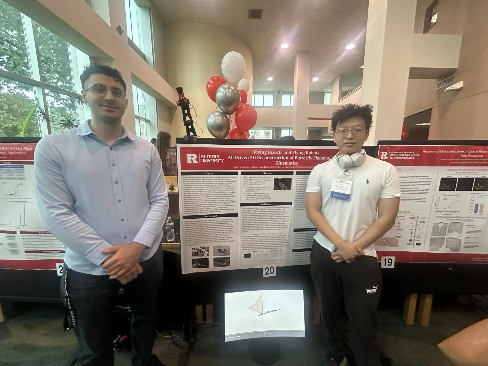
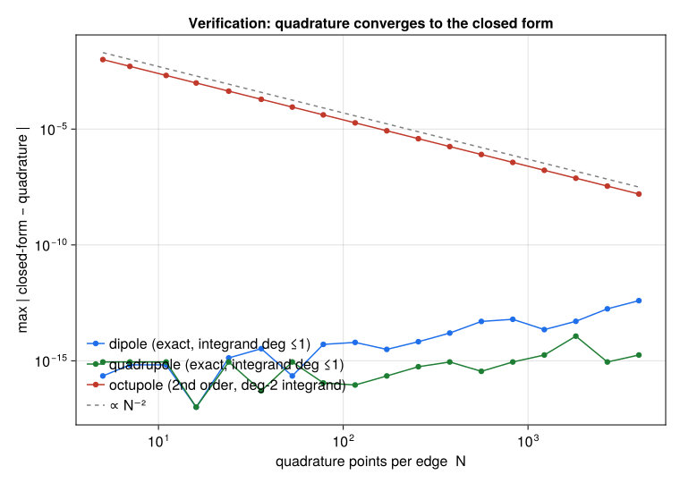
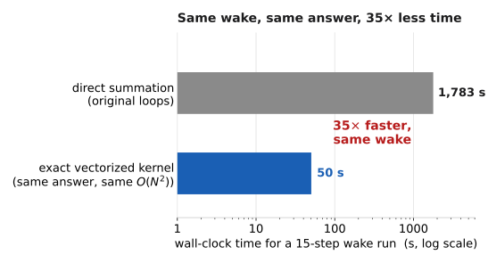

Fast multipole methods for flapping-wing wakes
Denda Lab · Bio-Inspired Micro Aerial Vehicles
Mechanical & Aerospace Engineering, Rutgers University ·
Aresty Research Scholar, with Prof. Mitsunori Denda ·
co-advised by Prof. Onur Bilgen · 2026 – present

Discrete-vortex solvers for flapping flight spend almost all of their time on one operation: every vortex element inducing velocity on every other, an O(N²) sum repeated at each time step. This project derives closed-form multipole moments for vortex rings and polygonal panels, the translation operators between them, and a-priori far-field error bounds, and assembles them into a fast multipole method verified against direct summation across an automated suite of 40 test groups and 274 checks. Integrated into the group’s MATLAB three-dimensional wake code as a replacement velocity kernel, a 15-step run went from 1,783 s to 50 s. The solver is differentiable throughout, so flapping strokes can be designed by gradient ascent. A follow-on proposal with Prof. Onur Bilgen extends the method toward reduced-order wake models for aeroelastic analysis and design.
Interactive demonstration
The demonstration below reproduces the structure of the method in two dimensions, live in the browser. A flat plate pitches and heaves in a free stream; a quasi-steady Kutta condition converts the rate of change of bound circulation into shed vorticity, and the wake convects itself through a Krasny-regularised Biot–Savart kernel. Direct summation evaluates all N² pairs. Multipole far field organises the wake in a quadtree and replaces each well-separated group by its circulation, dipole, quadrupole and octupole moments — the same moment hierarchy the research builds for three-dimensional vortex rings — accepting a group as far when its measured radius is below a fraction θ of its distance. The counter reports the measured cost and the measured error against direct summation; the outlined boxes show the groups serving one highlighted target vortex.
Switching to the multipole far field replaces the N² pair sum with several-fold fewer evaluations at this modest N, at a measured error at the 10−3 level — tighten θ and the error falls, loosen it and the cost does, and the gap between N² and the tree’s near-linear count widens as the wake grows. At demonstration scale the honest measure is the operation count; the wall-clock payoff arrives at the scale of the group’s three-dimensional wakes, where this same trade, made rigorous by closed-form ring moments, translation operators and a-priori error bounds, turned 1,783 s into 50 s.
Verification and timing

